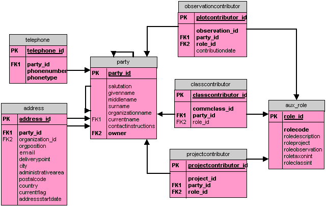

1. A party is a person or organization that contributes to one or more plots. That contribution can be via a project, an observation, intepretation of an observation as belonging to a community, or interpretation of a taxon as belonging to a plant concept.
2. A party (e.g., person) can belong to a party (e.g. organization). This relationship is recorded through a recursive foreign key to the parent party. Parties may also have a parent and child relationship owing to a name change.
3. Parties have multiple addresses and telephone numbers. Obsolete but archival addresses are retained, with the current address indicated via a currency flag.
4. A party contributes to projects in various ways via specific roles.
